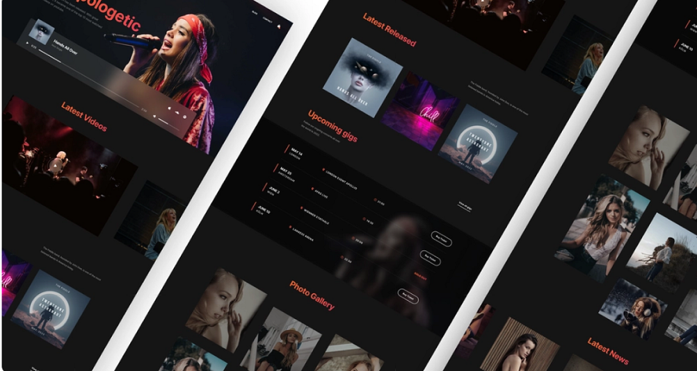

Web Design
Fiddle Creative
Musician Design

Services
Web Design & Development
Location
International Project
Clients
Meerab Maroof/Aleesha Amir
Live Version
www.tavonline.com
EasyEditabel
Musician Theme
The "fiddle musician theme" typically refers to musical themes, melodies, or motifs played by fiddle players, often associated with traditional or folk music genres.
The fiddle is a string instrument, essentially a violin played in a folk or traditional style.
heir own stylistic embellishments, such as slides, double stops, or rhythmic variations, to personalize the music. This approach to playing highlights the fiddle's versatility and allows musicians to adapt tunes to different cultural or regional styles. Whether accompanying a lively barn dance, setting a nostalgic tone in a country ballad, or bringing traditions.
Next Project
Gronn Theme


copyright @ 2022 Mahnoor Adil
all rights reserved